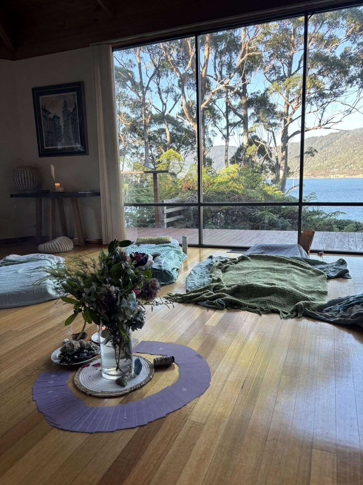

Lucine Setian ·
What happens on a breathwork retreat near Sydney for ADHD folks
A breathwork retreat near Sydney with me is a day or a weekend where you stop holding everything together. You lie down and breathe, you rest, someone else cooks, and nobody needs a thing from you. Here's what it's really like, for ADHD folks who can't remember the last time they properly stopped.

Most of the ADHD folks who come to my retreats hold everything together for everyone else.
The job. The kids. The house. The calendar in your head that never switches off.
At a retreat, that stops for a while. That's the whole point.
What a breathwork retreat near Sydney looks like
My last full weekend was in October 2026. It was on a private bush property in a green valley, about 90 minutes from Sydney. Two nights, and a small group of 12.
Here's what was in it:
- Deep breathwork sessions with me, lying down with your eyes closed.
- Somatic movement and a soul dance session with Taline Valerio.
- Sound healing and a cacao ceremony.
- Every meal cooked for you, from Friday dinner to Sunday lunch.
- A pool and an outdoor spa for the rest time in between.
In September I also ran a half day in Mosman. Shorter, close to home, then back to your own bed that night.
I've run retreats further away too, including one in Tasmania. Vanessa H. came to that one and wrote:
"For me, the breathing was healing, and profoundly grounding and I left feeling lighter, clearer, and deeply grateful."
What the breathwork is like
You lie down on a mat with blankets, close your eyes and breathe while I guide you. Each session runs for 20 minutes or more.
Then we talk about what came up. That talk afterwards is the real key. Putting words to what came up helps old stress settle, so you don't just carry it home again.
You don't need any experience. Most people who come have done little or no breathwork. There's no right way to do it.
Katherine C. wrote this after one of my sessions:
"I felt safe, held and empowered to go where I needed to in my process."
Why a retreat suits an ADHD body
An ADHD brain works hard just to get through an ordinary day. Remembering, planning, starting, switching. Most of us don't notice how much, until it stops.
At home, even rest has a to do list. You lie down and your brain starts on the washing, the emails, tomorrow.
At a retreat there's nothing to organise. The plan is made. The food turns up. That frees up the part of you that's always on watch, so your body can actually come down.
I wrote about what that constant load does in what ADHD burnout feels like, and how breathwork helps in breathwork and ADHD.
Coming on your own
Most people come on their own. Most arrive a bit nervous, and that's normal.
The groups are small, so it's easy to feel at home. People usually leave with connections they didn't expect.
Kerryn K. came to one of my weekends and wrote:
"Lucine held me like I'd never been held in my life. To do nothing but receive her love and support was deeply moving."
The next retreat, April 2027
The next one is in April 2027. I haven't locked in the format yet, and I'd love your help.
It could be a Sydney day retreat, close to home. Or a full weekend away in the bush. Or both.
If you join the waitlist, you can tell me which one you'd actually come to. It takes ten seconds, and it really does help me plan. Waitlist members hear the dates and the place before anyone else. It's free, with no commitment. 💛
Is a breathwork retreat right for me?
Breathwork isn't right for everyone. If you're pregnant, or you have a heart condition, epilepsy, high blood pressure, glaucoma or a psychiatric diagnosis, please contact me before you book so we can talk it through. It's a wellbeing practice, not medical treatment, therapy or crisis support.
Ready to properly stop for a while?
Join the retreat waitlist to hear first about April 2027, and tell me whether you'd like a Sydney day or a weekend away.
Not ready for a retreat yet? Start with my free Nervous System Audit. It takes about 4 minutes and shows you how full your tank is.
Keep reading
- Breathwork in Sydney for ADHD folks
- ADHD and perimenopause: why everything got louder
- What ADHD burnout feels like, and how it's different from normal tired
- All writing
I'm Lucine. I'm a certified breathwork facilitator (School of Breathwork, 2023), a member of the International Breathwork Foundation and the Australian Breathwork Association, and I've facilitated at the Sydney Opera House. I have ADHD too.